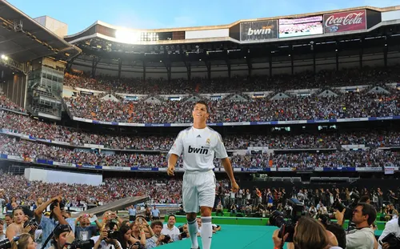
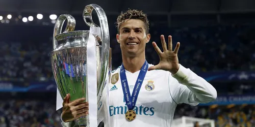
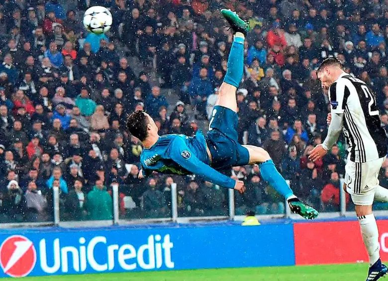
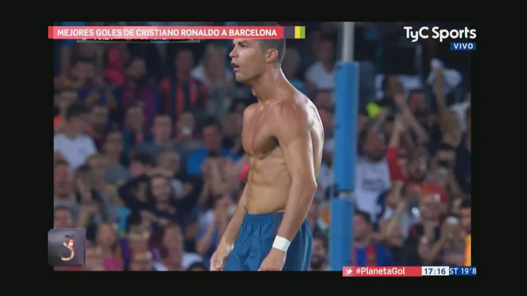

El máximo goleador histórico del Real Madrid
En el verano de 2009, el Real Madrid presentó a Cristiano Ronaldo en un Estadio Santiago Bernabéu abarrotado. Desde ese momento, comenzaría una de las épocas más doradas en la historia del club blanco.

Durante sus 9 temporadas en Madrid, El Bicho destrozó todas las estadísticas. Anotó la brutalidad de 450 goles en 438 partidos, promediando más de un gol por encuentro. Con él, el Madrid conquistó 4 UEFA Champions League, 3 de ellas de manera consecutiva.

Ha marcado goles en 11 temporadas consecutivas en la Champions League, un récord absoluto.
En 2018, se convirtió en el primer jugador en alcanzar los 100 millones de seguidores en Instagram.
Su celebración "Siiiuuu" se ha convertido en un ícono global, imitado por fans en todo el mundo.
Aquí algunos momentos icónicos de CR7 con el Real Madrid:

